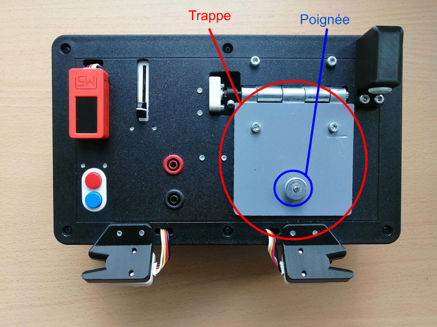
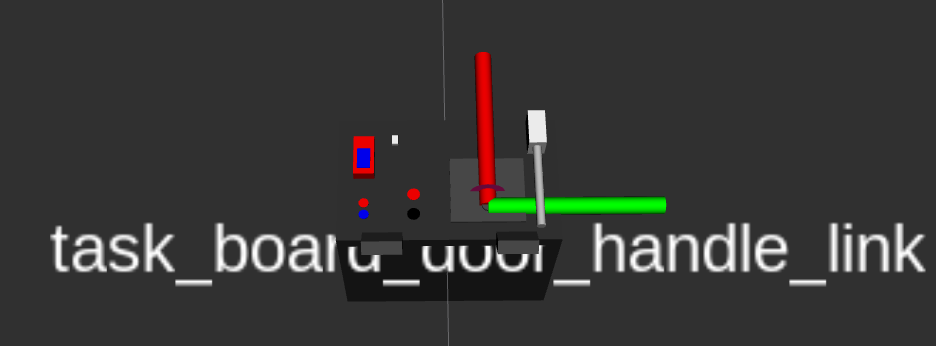
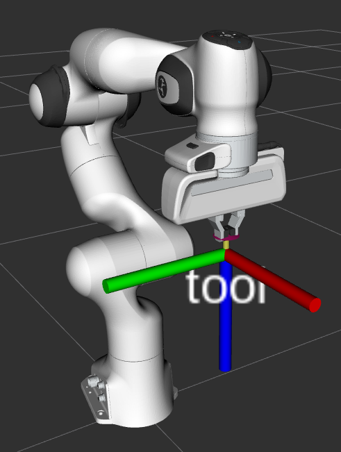

Tâche de la trappe & sonde (Partie 1)
La première partie de cette tâche consiste à ouvrir la trappe de la taskboard sachant que celle-ci dispose d’une petite poignée circulaire.
|

|
|---|
Fig. 60 Aperçu de la trappe et poignée sur la task-board
Point d’approche
Pour mener à bien cette tâche, au vu de l’état de l’art réalisé en amont, différentes solutions pouvaient être mise en place et envisagée, comme par exemple : utiliser directement la pointe la sonde après l’avoir retirer de son port pour venir ouvrir la trappe ou bien plus simplement par le biais de la pince au bout du gripper.
On a finalement décidé d’écarter la solution d’ouverture avec la pointe de la sonde qui nécessitait une assez grande précision à la fois pour bien se placer au niveau de la fente entre la trappe et la surface supérieure de la task-board pour éviter les mauvaises manipulations qui pourraient endommager le matériel.
Ainsi, pour attrapper la poignéé de la porte et réaliser l’ouverture de la trappe, on se base ici sur les différentes TF intégrées dans le fichier task_board.urdf et notamment celles qui nous seront utile, c’est-à-dire “task_board_door_handle_link” et d’une TF statique “tool” correspondante à la pince, comme le montre l’image ci-contre:
|

|

|
|---|
Fig. 61 TF de la task_board_door_handle_link et tool
Code implémenté
Le script pyhton trappe.py développé ici importe la surcharge de la classe Panda et c’est différentes méthodes liées au contrôle, mouvement et trajectoire du bras robot. Voici les étapes successives mises en oeuvre pour effectuer cette tâche :
Tout d’abord, on commence par faire un appel à la méthode
go_to_framepour placer l’End Effector du robot au niveau de la poignée de la trappe et en procédant à la fermeture de la pinceEnsuite, on initialise un tableau de valeur d’angle qui va contenir l’ensemble des angles successifs de la trajectoire circulaire tout en définissant le point autour duquel celui-ci va être réalisé pour procéder à l’ouverture de la trappe en initialisant une variable de type
PoseStamped. Cette variable va par la suite être utilisée pour réaliser un changement de repère en passant depanda_link0àtask_board_door_hanfle_linkà l’aide de la méthodeget_transform_poseet donc réaliser la trajectoire circulaire dans le repère de la trappe. Pour résumer, cette étape permet de préparer le robot pour manipuler la poignée de la trappe en ajustant une position de référence autour de laquelle effectuer la trajectoire circulaire.Une fois les différents éléments mis en place, on procède à l’interpolation de la trajectoire circulaire voulu par des formules mathématiques de trigonométrie d’un cercle, puis on vient les stocker dans des tableaux de valeurs x, y et z.
Finalement, la trajectoire est jouée grâce à la méthode
play_trajectoryen spécifiant en arguments les tableaux de valeurs x, y et z définis et complétés précédemment. En complément de cela, on utilise les méthodesmove_gripperetgrasp_gripperpour l’ouverture et la fermeture du gripper au bon moment au niveau de la saisie de la poignée de la trappe et à la fin de l’ouverture de la trappe.
Vidéo de démonstration de la tâche
Voici, un aperçu du résultat obtenu :
|
|
|
|---|
|
|
|---|
Fig. 62 Vidéo d’exécution de la tâche de la trappe
Problème rencontré
Quelques petits décalages on pu être réglé et notamment au niveau de la hauteur en z étant donné que lors des premiers essaies en simulation, le bras faisait un mouvement brusque vers l’avant en passant à travers la trappe de la task bard. Ainsi, pour résoudre ce problème qui intervenait dans la plannification de la trajectoire, on a réadapté certaines méthodes issues de la surchage de la classe Panda pour éviter ce problème.
Cependant, un deuxième obstacle dans la réalisation de cette tâche résidait dans le grippage de la pougnée de la trappe qui de part ça forme circulaire n’est pas évidente à attraper et maintenir stable à la même position tout au long de l’interpolation circulaire pour ourvir la trappe, ce qui causait un léger glissement du poignée le long de la pince.
Mode d’emploi
Ligne de commande à entrer dans le terminal pour exécuter cette tâche :
Launchfile superviseur permettant d’indiquer une position cible au Panda :
$ roslaunch trajectory franka_positions.launch
Launchfile implémentant le code permettant de réaliser la tâche spécifique de la trappe : Ligne de commande à entrer dans le terminal pour exécuter cette tâche :
$ roslaunch trajectory trappe.py